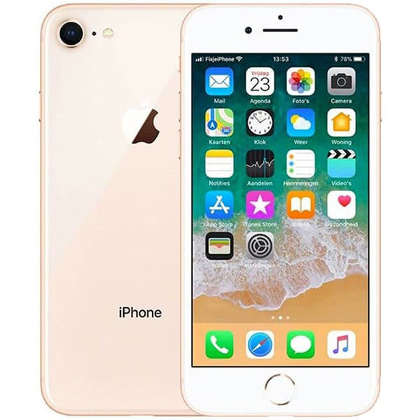

GIỚI THIỆU VỀ SMARTPHONE

Smartphone là gì? Những tác dụng của smartphone
I.Smartphone là gì
Smartphone dịch ra tiếng Việt có nghĩa là “điện thoại thông minh”. Nó là 1 loại điện thoại di động thế hệ mới, tích hợp với hệ điều hành và cho phép người dùng sử dụng các ứng dụng tiện ích sẵn có trong cửa hàng ứng dụng (hay còn gọi là App Store) của hệ điều hành ấy.
Các hệ điều hành smartphone:android;ios;windows phone;symbian;blackberry os;bad
II.Những tác dụng của smartphone
Cuộc sống luôn luôn là 2 mặt của đồng xu. Có mặt trái và mặt phải. Điện thoại di động cũng vậy. Lợi ích rất lớn nhưng tác hại cũng rất nhiều. Điều hay là tác hại hay lợi ích đều tùy vào cách sử dụng chúng của mỗi người. Vậy hãy cùng trải nghiệm những Lợi ích và Tác hại của việc sử dụng điện thoại quá nhiều ảnh hưởng đến sức khỏe não bộ bạn ra sao nhé.